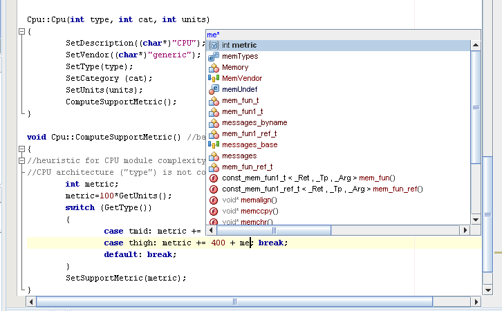
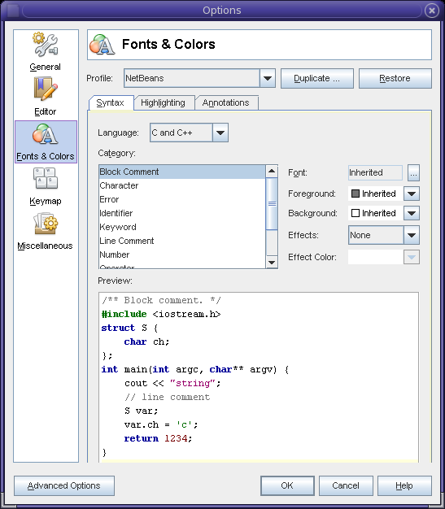
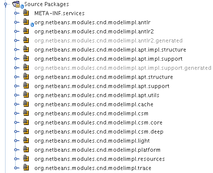
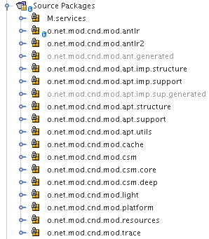

|
Vladimir Voskresensky |
| Vladimir's Hot Links: |
I'm in St. Petersburg, Russia. I work at Sun Microsystems as part of the Sun Studio team. Sun Studio is a set of tools for native C/C++/Fortran development. Sun Studio isn't just an IDE. It is a full set of compiler tools: C, C++, Fortran compilers, Performance Analyzer, DBX debugger and more... as well as an IDE. The tools themselves are really the best in the world, but the user interface is not sufficiently user friendly. So, our group is working on the next generation of Sun Studio IDE.
In terms of pure Java, not yet. I'm new to Java. The NetBeans sources were my guide to Java programming. But I like to learn, like to acquire new knowledge, and I like to be helpful, so you can find me increasingly on the NetBeans Platform mailing list. I'd be even more helpful there, if Jesse Glick wouldn't be so fast in answering questions! :-)
It's a good question! Here's a brief overview of the distinctions:
When to use the pack? And when to use Sun Studio? Well, use the pack for development on Windows, because Sun Studio does not support that operating system. Also use the pack for Mobile development, that is, on Symbian OS. Or you can use the pack for developing existing projects with a previously chosen and predefined set of compilers. However, any Linux development is better to be done using Sun Studio, especially on new platforms, so that you can take advantage of multicore, multiprocessor, and multithreaded technology. Any Solaris development that does not use Sun Studio is nonsense! High Performance Computing would better go with Sun Studio, as well as any other performance-sensitive application. If the application engages parallelization, OpenMP, or MPI... it has almost no choice: Sun Studio is the best!
For further details, take a look at these slides by Roman Strobl: "Sun Tools Overview: NetBeans IDE, Java Studio Creator, Java Studio Enterprise, Sun Studio—Which one to choose? Feature highlights, demos, future plans".
From the NetBeans IDE, I use everything related to Java SE and module development.
From the NetBeans Platform, I used the various editor APIs, because I worked on the editor features for C/C++ development. I implemented the UI for C++ code completion, which looks as follows:

I also implemented other features, such as hyperlink support in the editor for jumping from an element to its definition or declaration, auto completion of matching brackets and some work on syntax highlighting. Here are two Wink demos that show the features implemented in the NetBeans C/C++ Pack for hyperlinking to declarations and definitions and for auto completion of matching brackets:
Click on the screenshots above to start the Wink demos! (Many thanks to Sergey Grinev for these demos.)
In addition, I extended the IDE's Options window, as you can see here:

Well, I joined Sun one and a half years ago when our small group started experimenting with prototyping a new IDE for Sun Studio. We had the main task... the IDE for native languages based on NetBeans Platform and some legacy code. And we had freedom in how we reached that goal!
We had very tough time constraints, a lot of ideas and features to add, lack of good documentation on NetBeans development... those were very tough days. But we made it, made it from scratch. After half a year we had a very nice IDE with code folding, code completion, hyperlink support as well as class view, native project system, improved debugger workflow and remote development.
We were getting good responses for the work done and there was the decision to let the NetBeans community see our results. Everyone is welcome to try the NetBeans C/C++ Pack, which is the new iteration of native development inside our favorite NetBeans IDE. Not all prototypes are there, and a lot of work has still to be done, so all developers are welcome to join us and improve C/C++ integration in NetBeans IDE, because we have the ambition to reach the same usability progress in C/C++ areas as NetBeans has for Java over the years.
I had various tips and tricks in NetBeans module development and I'm really glad that I don't need to share them anymore, because the module development support starting from NetBeans 5.0 deprecated these tricks! It is impressive how easy it is to start with Platform-based development now.
However, a useful tip is to not forget about the differences between line separators on different operating systems, as I did... If you programmatically get the text of documents opened in the IDE, then you realize that there is always only "\n" as the line separator (note, it is only one character), even if the document corresponds to a file on disk where "\r\n" (2 chars on Windows) or "\r" (on Mac) is used. This means that the size of the file could not be equal to the number of characters in the document that you open in the IDE. The IDE itself uses for such conversions the special class org.netbeans.editor.Analyzer, which helps to read from java.io.Reader to org.netbeans.editor.BaseDocument by substituting line separators with line feeder "\n" and vise versa... write BaseDocument into java.io.Writer while restoring the original line separator.
In my case it was funny: when jumping with the hyperlink you landed some positions after the declaration where you were supposed to land. The problem was trivial: we use our own internal lexer working with files on disk (when not opened in editor), some files were originally from Windows, so there were 2 characters for the line separator. As a result, the lexer-provided offsets from the file were not the same as the offsets in the editor and we failed with text correspondence.
So, don't repeat this mistake! Use the org.netbeans.editor.Analyzer class or the org.netbeans.editor.LineSeparatorConversion class, when you're writing tests and don't want to deal with the differences between line separators on different operating systems. For example, just pass a String, char[] or Reader through the end-of-line converter org.netbeans.editor.LineSeparatorConversion class or use the org.netbeans.editor.Analyzer class when you are reading from file and plan to work with text as it will be in the editor. Something like this:
String test1 = "string\r"; String test2 = "string\n"; String test3 = "string\r\n"; String fromMac = org.netbeans.editor.Analyzer.convertLSToLF(test1); String fromUnix = org.netbeans.editor.Analyzer.convertLSToLF(test2); String fromMs = org.netbeans.editor.Analyzer.convertLSToLF(test3); assert(fromMac.equals(fromUnix)); assert(fromUnix.equals(fromMs));
Do I have other tricks in mind? Maybe... I use a laptop, so I neither have dual monitors nor a 21 inch screen. But, I want to see as much of the sources as possible and preferably without horizontal scrolling... For this reason, there's one parameter that I always add to my etc/netbeans.conf file:
netbeans_default_options="...-J-Dorg.netbeans.spi.java.project.support.ui.packageView.TRUNCATE_PACKAGE_NAMES=true..."
It saves me space for the editor by decreasing the necessary width of the Projects window. For example, here you see one of my modules. On the left, you see what the Source Packages folder in the Projects window looks like without the TRUNCATE_PACKAGE_NAMES parameter. On the right, you see what the same folder looks like with the parameter set:
 
So, the left screenshot is twice as wide as the right screenshot! That makes a big difference to the size of the editor, which should be as wide as possible.
Another tip... it's a good idea to check out the available editor shortcuts (Tools->Options->Keymap) now and then as a quick review of the features provided by the IDE! Then, select a new one to use, starting from now. Later, have a look again, and start using one more. It could significantly improve your coding. Some engineers say that completion and other "auto" features aren't necessary and that they are coding much faster without them, but I'd recommend that even they pay attention to the configurable abbreviations (Tools->Editor->Code Templates), which are very powerful and at least "fori", "forc", and "fore" should save a lot of typing. And, you can even add any of your own frequently-used constructions and customize them with parameters.
I had to become familiar with NetBeans Platform development as quickly as possible, to pick up responsibility for the interesting tasks assigned to me. And I had to implement my own ideas for the C++ editor, but the lack of exact examples of platform usage was a problem. I was pampered by the MSDN knowledge base during my pre-Sun work activities and expected the same level of documentation for the NetBeans Platform. I wasn't that lucky, although I must say that it was a lot of fun to adapt to the new world with new rules where you are an investigator and discoverer of all the hidden platform features.
I was looking for any available information on Platform development: I started with the book "Definitive Guide" by Tim Boudreau and Jesse Glick, but as it was already obsolete, I greedily gulped down all available tutorials and impatiently waited for new ones... I was still hungry... and as result I just read the one big example of how the NetBeans Platform is used—the NetBeans IDE sources themselves! Do you want UI for code completion? Not a problem! Read the Java editor sources. Interested in hyperlink support or code folding? Not a problem! It should already be somewhere in the sources, you just need to find it.
At the same time, invisible to the NetBeans community, I read all of the questions/answers on nbdev@netbeans.org and dev@openide.netbean.org and from time to time answered them to also be helpful.
Now the situation is much better:
I enjoy the help that the IDE gives you in module development. It helps you by, for example, quickly detecting compile-time problems, by highlighting errors and providing quick fixes with suggestions. Also, if you miss something in the IDE, you can always search on http://www.nbextras.org/, which provides a cool collection of small, free, and useful NetBeans modules from the community. If a feature is still absent, you can write it yourself and the NetBeans Platform will help you with this. You can use the great modularity of the NetBeans Platform to construct your small but very helpful module by reusing existing components.
When you start developing rich client applications, you can start from scratch and, for example, without any coding, compose the editor application as a base. Then add some other lovely features of the IDE itself to the application with the help of wizards and minimal effort on your part.
Also, I enjoy using hyperlinks to navigate in my code and review others sources. Without question, I wanted C++ developers to have the same! So I added hyperlink support to the C++ editor and you can see the result by looking at the Wink demo earlier in this interview. However, I want to the IDE's hyperlink support improved. For example, look at the following snippet:
A a = new A(); foo(a);
Let's say I realize that the current usage of foo in the code is okay, but I want to change the type of a from A to AA. If I do that, then foo(AA a) doesn't exist and I've lost the hyperlink from foo(a) completely. So, I'd like to jump to foo in this case anyway and want the IDE to help me, i.e., by a pop up list of unambiguous hyperlink destinations. Frankly, now it isn't so easy to jump between a base function implementation and an overridden version of a function, without using "Find Usages". However, if the NetBeans Platform were to provide us with pop-up list of hyperlink destinations, we would be able to add some new and useful features. For example, Ctrl-Alt-Click would pop up a list to see where the function was defined originally and where it was overridden, as well as allowing us to quickly jump to the related parts of the sources.
Well, when I look at my shortcuts, I have F7 for the "Step into" action while I'm debugging and so if I try to assign F7 to "Edit Text" in the Form editor, the IDE informs me about a conflict and removes F7 from "Step Into"... To me, this is nonsense, because I know that the Form editor and the Debugger are areas without any intersections. As a user, I don't see any problems with having the same events being handled by absolutely different actions in absolutely different modes of development. The same is true for the development cycle areas with intersections. It seems absolutely impossible to have the same F5 shortcut for "Debug Main Project" and "Continue" action even if I know that I don't ever need to start two parallel debugger sessions.
In the IDE I like the new module development support introduced in NetBeans IDE 5.0. I especially like Libraries->Add Dependency, in the Project Properties dialog box, where I can just type the name of a class I'm interested in and the module provider will be foundH. So, I don't need to look for the module name (something like org.netbeans.modules.cnd.modelimpl/1) and its current version value in the module sources to update my Manifest.mf file and my my project.xml file with the correct dependency.
In NetBeans Platform, the org.openide.util.Lookup class is awesome!
In my previous job, at Infomind, we had Einstein's rule for project development: "Things should be made as simple as possible—but not simpler!" Lookup follows this approach perfectly and provides a very powerful and easy-to-use mechanism for intermodular communication.
In a well-designed project, the API, API clients and API implementations should be separated. Clients of an API should not be interested in the current implementation. So, the NetBeans "Lookup" concept helps to "look the implementation up", something like this: "Hey, is there someone who can provide me with 'cool_feature'?" In code, you do it like this:
Cool_feature_provider provider = (Cool_feature_provider) Lookup.getDefault().lookup (Cool_feature_provider.class);
if (provider != null) {
provider.use_cool_feature();
}
I could try and explain everything about this in my own words... but there is already an excellent set of information available:
I'm glad that Sun is offering such a great open source development platform as the NetBeans Platform, as well as the ready-to-use IDE based on this platform. I hope it will be improved not only by Sun, but the community as well. I'd like to invite everyone to share their experiences in module development to help us, for example, add first class support for C++ development to NetBeans. It could be especially interesting if a DBX debugger would be integrated and we could get real multilanguage Java-C++ debugging support inside one IDE.
So, if you have any ideas about the best C++ development lifecycle... let us know, we will add them to our feature list. If you find something annoying in your current C++ IDE... let us know, because we don't want to go in wrong direction. If you have free time and knowledge towards improving your favorite IDE? Let us know, you can help our small team in moving forward our C/C++ development support for NetBeans.
For information about creating and developing plug-in modules and rich-client applications, see the following resources: